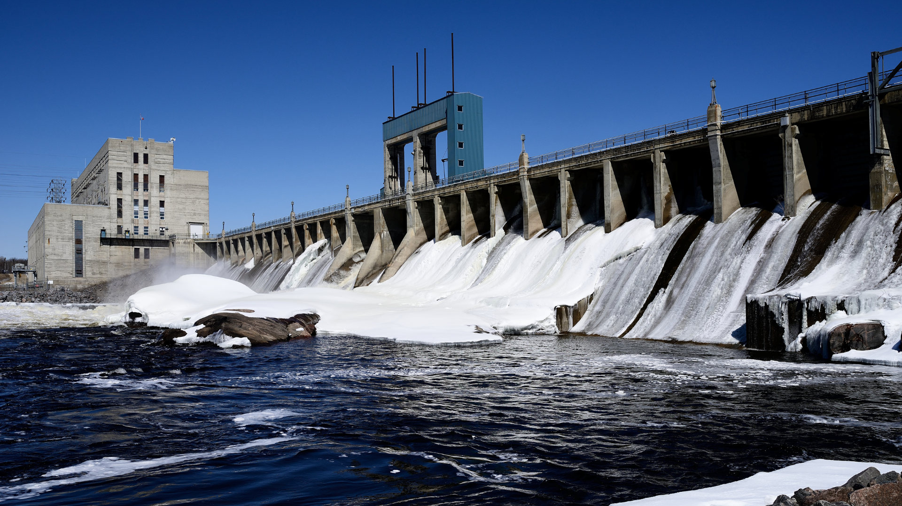

.png)
Revolutionizing Beach Homes with Hydropower
Hydropower is making waves in the renewable energy sector, particularly for beach homes. As the demand for sustainable and environmentally-friendly energy sources grows, hydropower offers a promising solution. This renewable energy harnesses the power of water flow to generate electricity, making it an ideal option for homes situated near the beach.

Beach homes can benefit greatly from hydropower due to their proximity to water sources. Implementing micro-hydropower systems can significantly reduce the reliance on traditional energy sources, lower energy bills, and decrease the carbon footprint. These systems are designed to be minimally invasive, blending seamlessly with the natural environment.
One of the key advantages of hydropower is its reliability. Unlike solar or wind energy, which are dependent on weather conditions, hydropower can provide a consistent energy supply. This makes it an attractive option for homeowners looking to ensure a steady flow of electricity throughout the year.
Moreover, hydropower systems require relatively low maintenance. Once installed, they can operate efficiently with minimal intervention, offering a long-term, cost-effective energy solution. As technology advances, these systems are becoming more accessible and easier to install, making them a viable option for many beach homeowners.
In addition to environmental and economic benefits, hydropower can enhance the overall sustainability of beach communities. By reducing the dependency on fossil fuels, these communities can set a precedent for eco-friendly living, encouraging broader adoption of renewable energy sources.
The integration of hydropower into beach homes represents a significant step forward in the quest for sustainable living. As more homeowners and communities recognize the potential of this renewable energy source, the future of beach living looks brighter and more sustainable than ever.